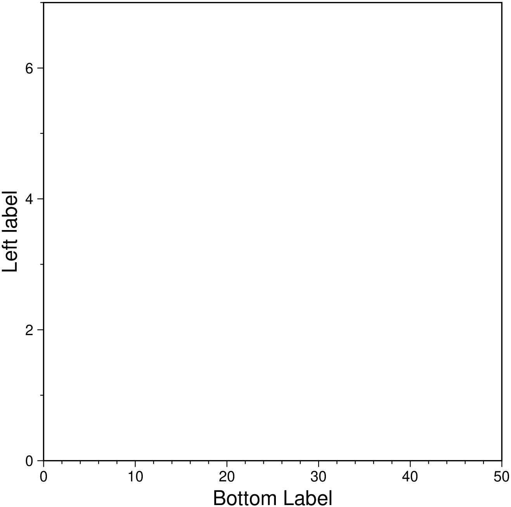
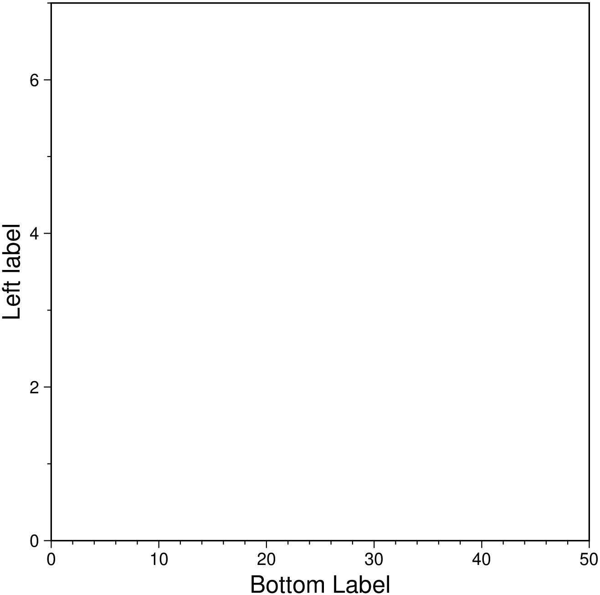
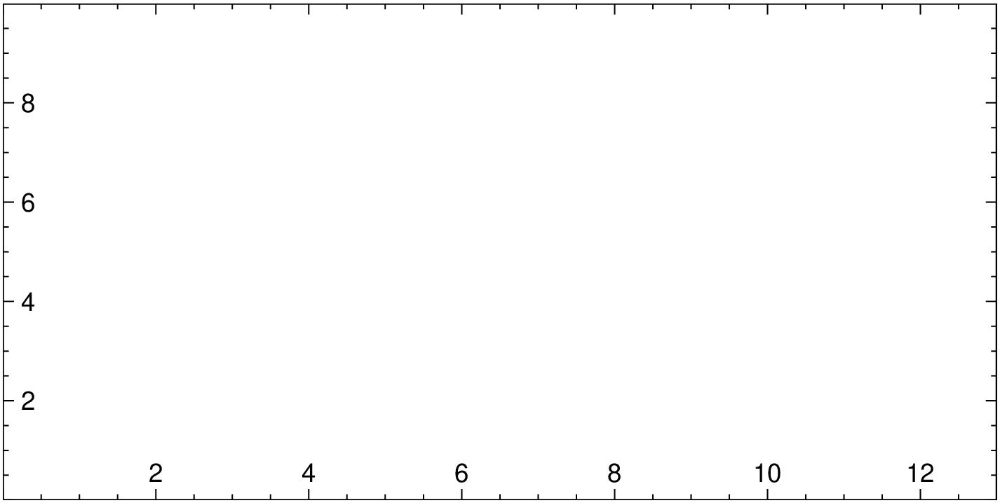
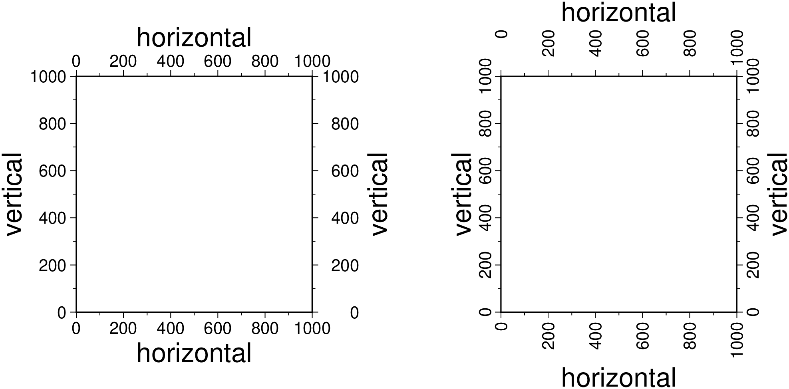
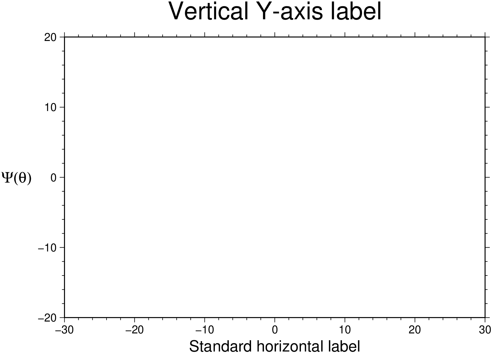

using GMT
basemap(limits=(0,50,0,7), figsize=10,
xaxis=(annot=:auto, ticks=:auto, label="Bottom Label", seclabel="Top label"),
yaxis=(annot=:auto, ticks=:auto, label="Left label", seclabel="Right label"), show=1)
Set map Axes parameters. They are specified by a keyword and a named tuple (but see [1])
frame=(axes=..., corners=..., xlabel=..., ylabel=..., annot=..., flipx=..., etc)or separated on a per axes basis by using specific xaxis, yaxis and zaxis that share the same syntax as the generic frame option. The xaxis2 and yaxis2 apply when dealing with secondary axes.
Before the rest, note that several modules have axes default settings (scatter, bar, etc…) but if no axes is desired, just use axes=:none. Also useful is the axes=:same to repeat the previously set (from another call) axes specification.
By default, all 4 map boundaries (or plot axes) are plotted and two annotated. To customize, use the axes keyword that takes as value a tuple with a combination of words. Axes are named left, bottom, right, top and, for the 3D maps, up. Next we have three categories of axes: the annotated and ticked, the ticked and those with no annoations and no tick marks. We call them full, ticks and bare and combine with the axes name using an underscore to glue them. Hence left_full means draw and annotate left axis, whilst top_bare means draw only top axis. The full combination is left|bottom|right|top|up_full|ticks|bare. To not draw a boundary, simply omit the name of it in tuple. Note that the short one single char naming used by GMT is also valid. E.g. axes=:WSn will draw and annotate left and south boundaries and draw but no ticks or annotations the top boundary. Two special cases are provided by the frame=:none and frame=:noannot that do not plot any axes or just plot but do not annotate or tick them respectively.
If a 3-D base map is selected with view and J=:z, by default a single vertical axes will be plotted at the most suitable map corner. Override the default by using the keyword corners and any combination of corner ids 1234, where 1 represents the lower left corner and the order goes counter-clockwise.
Use cube=true to draw the outline of the 3-D cube defined by region this option is also needed to display gridlines in the x-z, y-z planes. Note that for 3-D views the title, if given, will be suppressed. You can paint the interior of the canvas with fill=fill where the fill value can be a color or a pattern.
Use noframe=true to have no frame and annotations at all [Default is controlled by the codes].
Optionally append pole=“plon/plat” (or pole=(plon,plat)) to draw oblique gridlines about specified pole [regular gridlines]. Ignored if gridlines are not requested (below) and disallowed for the oblique Mercator projection.
xx and yy axes grow from left to right and bottom to top (zz axis too). This the default but that can be changed with the keywords flipx=true, flipy= and flipz=. Alternative names are xflip, yflip, zflip.
For Cartesian plots the slanted=angle allows for the optional angle to plot slanted annotations; the angle is with respect to the horizontal and must be in the -90 <= angle <= 90 range only. This applies to the x-axis only, with the exception of the slanted=:parallel form that plots the y annotations parallel to y-axis.
To add a plot title do title=“My title”. The Frame setting is optional but can be invoked once to override the above defaults.
GMT uses the notion of primary (the default) and secondary axes. To set an axes as secondary, use secondary=true (mostly used for time axes annotations).
The xaxis, yaxis and zaxis specify which axis you are providing information for. The syntax is the same as for the axes keyword but allows fine tuning of different options for the 4 (or 5) axes. In this case to flip the positive direction of one particular axis we use flip=true. Don’t need to explicitly say which axis because the function where it’s used already knows that.
To add a label to an axis use label=“Label text” if using the xaxis etc form, or use the xlabel, ylabel and zlabel keywords in the common frame tuple of options.
Still a third alternative to change the axis dirs is the option flipaxes=:x|:y|:z|:xy but note that so far this option is to be used mainly when creating subplot’s
Use Yhlabel=true to force a horizontal label for y-axes (useful for very short labels).
If the axis annotation should have a leading text prefix (e.g., dollar sign for those plots of your net worth) you can add prefix=“prefix” For geographic maps the addition of degree symbols, etc. is automatic (and controlled by the GMT default setting FORMAT_GEO_MAP). However, for other plots you can add specific units by adding label_unit=“unit”
Annotations, ticks and grid intervals are specified with the annot, ticks and grid keywords, which take as value the desired stride interval. As an example, annot=10 means annotate at spacing of 10 data units. Alternatively, for linear maps, we can use the special value :auto annotations at automatically determined intervals.
The optional phase_add=xx and phase_sub=xx shifts the annotation interval by tht xx amount (positive or negative).
The optional annot_unit indicates the unit of the stride and can be any of the ones listed below:
Note for geographic axes m and s instead mean arc minutes and arc seconds. All entities that are language-specific are under control by GMT_LANGUAGE.
For custom annotations and intervals, let intervals be given as custom=“intfile”, where intfile contains any number of records with coord type [label]. Here, type is one or more letters from a or i, f, and g. For a or i you must supply a label that will be plotted at the coord location. The custom option can also be used giving it a NamedTuple argument. For example xaxis=(custom=(pos=[1,2,3], label=(:Aa, :Bb, :Cc)), angle=45) (and we could have used type, as described above, intead of label). NOTE, the angle keyword can only be used on x axis.
A simpler way of controling the ticks and annotations with custom settings is to use the xticks option (same for yticks and zticks). Here, one give a tuple with labels, annotations interval, and angle of annotations. Of these, only the labels is mandatory, and the angle (a single value) can only be used for xticks. E.g. xticks=(1:5, [“a”, “b”, “c”, “d”], 90) where first element is an AbstractArray and second an array or tuple of strings or symbols. The more elaborate effect described above for the custom options is achieved here by escaping the a or i, f, and g codes with a forward slash in a text string. Example: xticks=(1:5, [“a”, “f”, “/ag e”, “f”, “/ag @p@”]). Here “/ag e” means annotate the third value with e and add a grid line. These x|y|zticks options work only for the primary axes. To change the secondary use the customticks form. E.g. xaxis2=(customticks(…),). Note that the ticks keyword is already taken to control the ticks interval hence the need to use a different one (customticks).
For non-geographical projections: Give negative scale or figure sizes to change the direction of increasing coordinates. For example figsize(-10,-8) will revert the sense of xx and yy axes.
For log10 axes: Annotations can be specified in one of three ways:
stride can be 1, 2, 3, or -n. Annotations will then occur at 1, 1-2-5, or 1-2-3-4-…-9, respectively; for -n we annotate every n’t magnitude. This option can also be used for the frame and grid intervals.
Use log=true, then log10 of the tick value is plotted at every integer log10 value.
Use 10log=true, or pow=true then annotations appear as 10 raised to log10 of the tick value.
For power axes: Annotations can be specified in one of two ways:
stride sets the regular annotation interval.
Use exp=true, then, the annotation interval is expected to be in transformed units, but the annotation value will be plotted as untransformed units. E.g., if stride = 1 and power = 0.5 (i.e., sqrt), then equidistant annotations labeled 1-4-9… will appear.
Finally, if your axis is in radians you can use multiples or fractions of pi to set such annotation intervals. The format is pi=n or pi=(n,m), for an optional integer n and optional m fractions 2, 3, or 4.
These GMT parameters can affect the appearance of the map boundary: MAP_ANNOT_MIN_ANGLE, MAP_ANNOT_MIN_SPACING, FONT_ANNOT_PRIMARY, FONT_ANNOT_SECONDARY, MAP_ANNOT_OFFSET_PRIMARY, MAP_ANNOT_OFFSET_SECONDARY, MAP_ANNOT_ORTHO, MAP_FRAME_AXES, MAP_DEFAULT_PEN, MAP_FRAME_TYPE, FORMAT_GEO_MAP, MAP_FRAME_PEN, MAP_FRAME_WIDTH, MAP_GRID_CROSS_SIZE_PRIMARY, MAP_GRID_PEN_PRIMARY, MAP_GRID_CROSS_SIZE_SECONDARY, MAP_GRID_PEN_SECONDARY, FONT_TITLE, FONT_LABEL, MAP_LINE_STEP, MAP_ANNOT_OBLIQUE, FORMAT_CLOCK_MAP, FORMAT_DATE_MAP, FORMAT_TIME_PRIMARY_MAP, FORMAT_TIME_SECONDARY_MAP, GMT_LANGUAGE, TIME_WEEK_START, MAP_TICK_LENGTH_PRIMARY, and MAP_TICK_PEN_PRIMARY
The entire parameters collection is displayed in the following table
| keyword | value | type | meaning |
|---|---|---|---|
| axes | false | Str or Symb | Do not plot any axis |
| noannot|bare | Str or Symb | Plot axes but no annot | |
| left_full | Str or Symb | Annot and tick left axis | |
| left_ticks | Str or Symb | Tick left axis | |
| left_bare | Str or Symb | Just draw left axis | |
| bottom_full | Str or Symb | Same for bottom axis | |
| right_full | Str or Symb | Same for right axis | |
| top_full | Str or Symb | Same for top axis | |
| up_full | Str or Symb | Same for z axis | |
| WESNwesn… | Str or Symb | The classic GMT syntax | |
| corners | 1234 | Str or Symb | Vertical axis |
| secondary | true or false | Bool | Secondary axis info |
| fill | color |
Str or Symb | Paint interior |
| cube | anything | Sym or Bool | Draw outline of the 3-D cube |
| noframe | anything | Sym or Bool | No frame and annotations at all |
| pole | lon lat | Str or Tuple | Draw oblique gridlines abot pole |
| title | the title | Str or Symb | Add a plot title |
| label | axis label | Str or Symb | Add a label to an axis |
| Yhlabel | y-axis hlabel | Str or Symb | Horizontal label for y-axes |
| prefix | annot prefix | Str or Symb | Annot leading text prefix |
| suffix | annot suffix | Str or Symb | Annot trailing text suffix |
| xlabel | x-axis label | Str or Symb | Add a label to X axis |
| ylabel | y-axis label | Str or Symb | Add a label to Y axis |
| zlabel | z-axis label | Str or Symb | Add a label to Z axis |
| xticks | x-axis ticks | Tuple | Add custom ticks/annotations to X axis |
| yticks | y-axis ticks | Tuple | Add custom ticks/annotations to Y axis |
| zticks | z-axis ticks | Tuple | Add custom ticks/annotations to Z axis |
| customticks | x | y | z ticks |
| seclabel | second label | Str or Symb | Add a seconadry label to X |
| annot | annot interval | Symb or Num | Annot stride interval |
| ticks | tick interval | Symb or Num | Tick interval |
| grid | grid interval | Symb or Num | Grid lines interval |
| slanted | x-annot angle | Symb or Num | Angle of slanted annotations |
| phase_add | xx | Numb | Shifts right the annot interval |
| phase_sub | xx | Numb | Shifts left the annot interval |
| annot_unit | annot unit | Str or Symb | Unit of the stride |
| custom | custom annot | Str or Symb | Custom annotations file |
| pi | n or (n,m) | Num or Tuple | If axis is in radians |
| scale | log | Str or Symb | log10 of the tick value |
| 10log or pow | Str or Symb | Annot as 10 raised to log10 | |
| exp | Str or Symb | Annot interval in transformed units |
[1] However, the original GMT compact syntax can also be used. I.e, axes=:a, or frame=:WSen or frame=“a1Of1d WS” also work.
Demonstrates use of dual (left vs right, bottom vs top) Cartesian axis labels

we can obtain the same result with a slightly shorter version of the above that shows how can mix frame and xaxis calls.
Show inside labeling (use default fig size).

Show horizontal and vertical annotations
using GMT
basemap(region=[0 1000 0 1000], figsize=5,
frame=(axes=(:left_full,:bottom_full,:right_full,:top_full), annot=200,
ticks=100, xlabel=:horizontal, ylabel=:vertical),
par=(FONT_ANNOT_PRIMARY=10, FONT_LABEL=16, MAP_ANNOT_ORTHO=:we))
basemap!(frame=(axes=(:left_full,:bottom_full,:right_full,:top_full), annot=200,
ticks=100, xlabel=:horizontal, ylabel=:vertical),
par=(FONT_ANNOT_PRIMARY=10, FONT_LABEL=16, MAP_ANNOT_ORTHO=:sn),
x_offset=9, show=1)
Show Yhlabel for horizontal labels for y-axis

m to indicate arc minutes or s to indicate arc seconds. If one of the units e, f, k, M, n or u is appended instead, the increment is assumed to be given in meter, foot, km, mile, nautical mile or US survey foot, respectively, and will be converted to the equivalent degrees longitude at the middle latitude of the region (the conversion depends on PROJ_ELLIPSOID). If y_inc is given but set to 0 it will be reset equal to x_inc; otherwise it will be converted to degrees latitude.+e is appended then the corresponding max x (east) or y (north) may be slightly adjusted to fit exactly the given increment [by default the increment may be adjusted slightly to fit the given domain]. Finally, instead of giving an increment you may specify the number of nodes desired by appending +n to the supplied integer argument; the increment is then recalculated from the number of nodes, the registration, and the domain. The resulting increment value depends on whether you have selected a gridline-registered or pixel-registered grid; see GMT File Formats for details. Note: If region=grdfile or region=GMTgrid is used then the grid spacing and the registration have already been initialized; use spacing and registration to override these values.R | region | limits | xlimits,ylimits | region_diag | limits_diag
xmin, xmax, ymin, and ymax specify the region of interest (aka, BoundingBox). For geographic regions, these limits correspond to west, east, south, and north and you may specify them in decimal degrees or in [+|-]dd:mm[:ss.xxx][W|E|S|N] format or pass them in as a string argument. When it’s a string the shorthands region="global" and region="global360" are equivalent to region=[-180 180 -90 90] and region=[0 360 -90 90] respectively.
Use the region_diag or limits_diag (or yet region_llur or limits_llur) to indicate that the limits are to be passed to GMT as xmin, ymin, xmax, ymax. This form may be needed when dealing with certain map projections.
Using the form region = [xmin xmax ymin ymax [zmin zmax]] or the equivalent tuple alternative covers the largest chunk of user cases. However, for fine tunning the limits setting we have an extended syntax that involves the use of Named Tuples. This involves a NamedTuple keyword that can have any of the following members name/value:
The xlimts, ylimits is used to break the specification into two pairs but it won’t support all the options of the limits functionality.
Select map projection. The following table describes the projections available as well as extra parameters needed to set a specific projection. If the proj argument is a string then it is assumed that it contains a full GMT -J style specification. Please refer to the GMT manual to learn how that works. -J GMT doc In the table, the center column indicates if a projection needs to set a projection center or if that is optional (when the parameters are under []). Several projections not to set also the standard paralalle(s). Those are indicated by a non-empty parallels column. Still, other projections accept an optional horizon parameter, which is an angle that specifies the max distance from projection center (in degrees, <= 180, default 90) that is plotted.
Given the different needs to specify a projection we can either use a simple form when only the projection name is required, e.g. proj=Mercator or in the more elaborated cases, a named tuple with fields name, center, horizon, parallels. An example of this later case would be to set an Oblique Mercator projection with center at 280ºW, 25.5ºN and standard parallels at 22 and 60ºN. We would do that with proj=(name=:omercp, center=[280 25.5], parallels=[22 69]). Note that we can either use arrays or tuples to specify pairs of values.
In case the central meridian is an optional parameter and it is being omitted, then the center of the longitude range given by the limits option is used. The default standard parallel is the equator.
For linear (Cartesian) projections one can use proj=:linear but the simplest is just to omit the projection setting, which will default to a fig with of 15 cm. To set other fig dimensions, use the figsize specification with figsize=(width, height) (both numeric or string) or just figsize=width and the height is computed automatically from the fig limits aspect ratio. We can also specify the scale separately: e.g. figscale=x, figscale=1:xxxx. As mentioned, when no size is provided a default width value of 15 cm is assumed.
For logarithm and power axes use logx, logy or loglog to take log10 of values before scaling, and powx and/or powy to to raise values to power before scaling.
When specifying a figsize, the UNIT is cm by default but it can be overridden by appending i, or p to the scale or width values. Append h, +, or - to the given width if you instead want to set map height, the maximum dimension, or the minimum dimension, respectively [Default is w for width]. Off course, when these settings are used, the argument to figsize must be in the form of strings.
The ellipsoid used in the map projections is user-definable by editing the gmt.conf file in your home directory. 73 commonly used ellipsoids and spheroids are currently supported, and users may also specify their own custom ellipsoid parameters [Default is WGS-84]. Several GMT parameters can affect the projection: PROJ_ELLIPSOID, GMT_INTERPOLANT, PROJ_SCALE_FACTOR, and PROJ_LENGTH_UNIT; see the gmt.conf man page for details.
See [GMT Map Projections] for a list of projection examples
| name | center | horizon | parallels | GMT code | Description |
|---|---|---|---|---|---|
| aea, Alberts | lon_0lat_0 |
NA | lat_1lat_2 |
Blon_0/lat_0/lat_1/lat_2 |
Albers conic equal area |
| aeqd, azimuthalEquidistant | lon_0lat_0 |
yes | NA | Elon_0/lat_0 |
Azimuthal equidistant |
| Cyl_stere, cylindricalStereographic | [lon_0[lat_0]] |
NA | NA | Cyl_stere[lon_0[/lat_0]] |
Cylindrical stereographic |
| cass, Cassini | lon_0lat_0 |
NA | NA | Clon_0/lat_0 |
Cassini cylindrical |
| cea, cylindricalEqualarea | lon_0lat_0 |
NA | NA | Ylon_0/lat_0 |
Cylindrical equal area |
| eqdc, conicEquidistant | lon_0lat_0 |
NA | lat_1lat_2 |
Dlon_0/lat_0/lat_1/lat_2 |
Equidistant conic |
| eqc, PlateCarree, equidistant | [lon_0[lat_0]] |
NA | NA | Q[lon_0[/lat_0]] |
Equidistant cylindrical |
| eck4, EckertIV | [lon_0] |
NA | NA | Kf[lon_0] |
Eckert IV equal area |
| eck6, EckertVI | [lon_0] |
NA | NA | Ks[lon_0] |
Eckert VI equal area |
| gnom, Gnomonic | lon_0lat_0 |
yes | NA | Flon_0/lat_0 |
Azimuthal gnomonic |
| hamm, Hammer | [lon_0] |
NA | NA | H[lon_0] |
Hammer equal area |
| laea, lambertAzimuthal | lon_0lat_0 |
yes | NA | Alon_0/lat_0 |
Lambert azimuthal equal area |
| lcc, lambertConic | lon_0lat_0 |
NA | lat_1lat_2 |
Llon_0/lat_0/lat_1/lat_2 |
Lambert conic conformal |
| lin, Linear | NA | NA | X[l | pexp | |
| logx, logy, loglog | Xl | Log | |||
| powx, powy | Xp exp | Power | |||
| merc, Mercator | [lon_0[lat_0]] |
NA | NA | M[lon_0[/lat_0]] |
Mercator cylindrical |
| mill, Miller | [lon_0] |
NA | NA | J[lon_0] |
Miller cylindrical |
| moll, Molweide | [lon_0] |
NA | NA | W[lon_0] |
Mollweide |
| omerc, obliqueMerc1 | lon_0lat_0 |
NA | azim |
Oalon_0/lat_0/azim |
Oblique Mercator, 1: origin and azim |
| omerc2, obliqueMerc2 | lon_0lat_0 |
NA | lon_1lat_1 |
Oblon_0/lat_0/lon_1/lat_1 |
Oblique Mercator, 2: two points |
| omercp, obliqueMerc3 | lon_0lat_0 |
NA | lon_plat_p |
Oclon_0/lat_0/lon_p/lat_p |
Oblique Mercator, 3: origin and pole |
| ortho, Orthographic | lon_0lat_0 |
yes | NA | Glon_0/lat_0 |
Azimuthal orthographic |
| poly, PolyConic | [lon_0[lat_0]] |
NA | NA | Poly[lon_0[/lat_0]] |
(American) polyconic |
| robin, Robinson | [lon_0] |
NA | NA | N[lon_0] |
Robinson |
| stere, Stereographic | lon_0lat_0 |
yes | NA | Slon_0/lat_0 |
General stereographic |
| sinu, Sinusoidal | [lon_0] |
NA | NA | I[lon_0] |
Sinusoidal equal area |
| tmerc, transverseMercator | [lon_0[lat_0]] |
NA | NA | T[lon_0[/lat_0]] |
Transverse Mercator |
| utmxx, UTMxx | NA | NA | NA | Uzone |
Universal Transverse Mercator (UTM) |
| vand, VanDerGritten | [lon_0] |
NA | NA | V[lon_0] |
Van der Grinten |
| win, WinkelTripel | [lon_0] |
NA | NA | R[lon_0] |
Winkel Tripel |
U | timestamp | time_stamp : timestamp=(just=“code”, pos=(dx,dy), label=“label”, com=true)
Draw Unix System time stamp on plot. By adding [just ]/dx/dy/, the user may specify the justification of the stamp and where the stamp should fall on the page relative to lower left corner of the plot. For example, BL/0/0 will align the lower left corner of the time stamp with the lower left corner of the plot [LL]. Optionally, append a label, or c (which will plot the command string.). The GMT parameters MAP_LOGO, MAP_LOGO_POS, and FORMAT_TIME_STAMP can affect the appearance; see the gmt.conf man page for details. The time string will be in the locale set by the environment variable TZ (generally local time).
V | verbose : verbose=true | verbose=level
Select verbose mode, which will send progress reports to stderr. Choose among 6 levels of verbosity; each level adds more messages:
Y | y_offset | yshift : yshift=[] | yshift=y-shift | yshift=(shift=y-shift, mov=“a|c|f|r”)
Shift plot origin relative to the current origin by (x-shift, y-shift) and optionally append the length unit (c, i, or p). This second case (with units) implies that x-shift must be a string. To make non-default sifts, use the form xshift=(shift=x-shift, mov=“a|c|f|r”) where a shifts the origin back to the original position after plotting; c centers the plot on the center of the paper (optionally add shift); f shifts the origin relative to the fixed lower left corner of the page, and r [Default] to move the origin relative to its current location. For overlays the default (x-shift, y-shift) is (r0), otherwise it is (r1i). When xshift or yshift are used without any further arguments, the values from the last use of that option in a previous GMT command will be used. Note that xshift and yshift can also access the previous plot dimensions w and h and construct offsets that involves them. For instance, to move the origin up 2 cm beyond the height of the previous plot, use yshift=“h+2c”. To move the origin half the width to the right, use xshift=“w/2”.
p | view | perspective : view=(azim, elev)
Selects perspective view and sets the azimuth and elevation of the viewpoint (180,90). When view is used in consort with Jz or JZ, a third value can be appended which indicates at which z-level all 2D material, like the plot frame, is plotted (in perspective). [Default is at the bottom of the z-axis].
PROJ_ELLIPSOID), the definition of the mean radius (PROJ_MEAN_RADIUS), and the specification of latitude type (PROJ_AUX_LATITUDE). Geodesic distance calculations is also controlled by method (PROJ_GEODESIC).n | interp | interpol : interp=(B_spline=true, bicubic=true, bilinear=true, near_neighbor=true, aliasing=true, antialiasing=true, bc=?, clipz=true, threshold=?)
Select grid interpolation mode by adding B-spline smoothing, bicubic interpolation, bilinear interpolation, or near-neighbor (for example to plot categorical data). Optionally, append antialiasing to switch on antialiasing (where supported) or aliasing to leave it out (in grdproject). Append bc to override the boundary conditions used, adding g for geographic, p for periodic, or n for natural boundary conditions. For the latter two you may append x or y to specify just one direction, otherwise both are assumed. Append clipz to clip the interpolated grid to input z-min/max [Default may exceed limits]. Append threshold=val to control how close to nodes with NaNs the interpolation will go. A threshold of 1.0 requires all (4 or 16) nodes involved in interpolation to be non-NaN. 0.5 will interpolate about half way from a non-NaN value; 0.1 will go about 90% of the way, etc. [Default is bicubic interpolation with antialiasing and a threshold of 0.5, using geographic (if grid is known to be geographic) or natural boundary conditions].